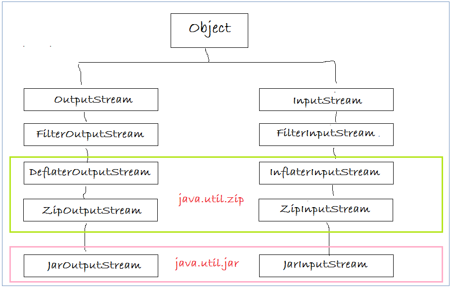
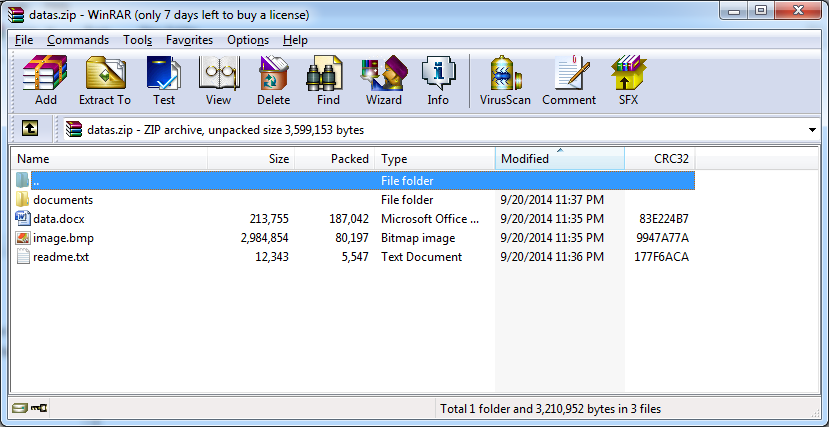
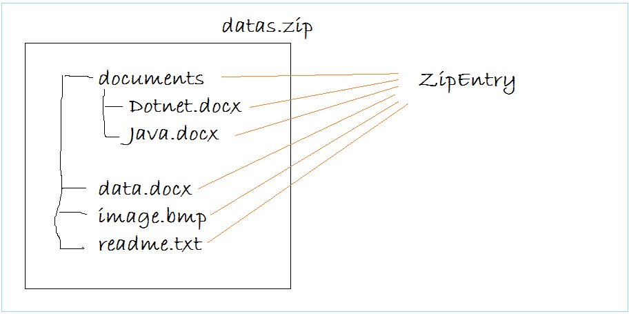

Compress
Tại sao phải nén (file, dữ liệu)? Nén để giảm dung lượng lưu trữ, để tiết kiệm ổ cứng, băng thông. Tất nhiên chúng ta sẽ phải mất thời gian nén và mất thời gian giải nén.
Chúng ta có những thuật toán khác nhau để nén dữ liệu (zlib, Huffman, 7z,...). Đây là một vấn đề chuyên sâu hay.
Chúng ta có thể tự định nghĩa những "quy ước nén" bằng cách sử dụng kiểu dữ liệu binary (như hệ thống B2B).
Nén rồi thì tất nhiên phải đi cùng với giải nén (đọc dữ liệu ảnh từ file cbz)
ZIP
ZIP là một định dạng chuẩn. Các file có đuôi là .jar (archive của Java), .cbx (Firefox add-on), .docx (MS Word 2007) thực ra cũng là định dạng ZIP cả.
Java cung cấp cho bạn package java.util.zip để thao tác với định dạng này.
Hình ảnh một file ZIP được mở với công cụ WinRAR:
Java coi các file trong file ZIP là ZipEntry.
Giải nén
Có 2 cách:
Cách 1: Sử dụng đối tượng ZipFile, lấy danh sách Entry của nó, rồi duyệt danh sách (duyệt kiểu truy cập ngẫu nhiên).
try (ZipFile zf = new ZipFile(zipFilePath)) {
Enumeration<? extends ZipEntry> entries = zf.entries();
while (entries.hasMoreElements()) {
ZipEntry ze = entries.nextElement();
InputStream is = zf.getInputStream(ze);
// op.read(ze, is);
}
} catch (IOException ex) {
ex.printStackTrace();
}
Cách 2: Sử dụng đối tượng ZipInputStream, duyệt tuần tự nó theo các Entry.
try (ZipInputStream zis = new ZipInputStream(new FileInputStream(zipFilePath))) {
ZipEntry ze;
while ((ze = zis.getNextEntry()) != null) {
// op.read(ze, zis);
}
} catch (IOException ex) {
ex.printStackTrace();
}
Chú ý:
ZipInputStream đọc file ZIP một cách tuần tự, còn ZipFile đọc nội dung file ZIP sử dụng truy cập ngẫu nhiên.
Vậy chúng ta nên sử dụng cách nào?
Một sự khác biệt cơ bản nữa giữa ZipInputStream và ZipFile là caching. Các ZipEntry không được cached khi đọc file mà sử dụng ZipInputStream và FileInputStream. Tuy nhiên, nếu file được mở sử dụng ZipFile thì nó sẽ được cached, do đó nếu nó được gọi lại thì nó chỉ được mở một lần. Giá trị cached được sử dụng trong lần mở thứ hai. Nếu bạn làm việc trong UNIX, hãy nhớ rằng tất cả các file zip được mở sử dụng ZipFile được map trong bộ nhớ, do đó hiệu năng của ZipFile thì lớn hơn ZipInputStream. Nếu nội dung của file zip hay thay đổi và được tải lại trong quá trình thực hiện chương trình thì nên sử dụng ZipInputStream.
Nén
Để nén file zip chúng ta sử dụng đối tượng ZipOutputStream, lần lượt putNextEntry vào nó.
private void zipIt(String archive, String prefix) {
try (ZipOutputStream zos = new ZipOutputStream(new FileOutputStream(archive))) {
for (String file : fileList) {
LOGGER.debug("File added: " + file);
ZipEntry ze = new ZipEntry(prefix + file);
zos.putNextEntry(ze);
FileInputStream fis = new FileInputStream(sourceDir + file);
int count;
byte[] buffer = new byte[1024];
while ((count = fis.read(buffer)) > 0) {
zos.write(buffer, 0, count);
}
fis.close();
// zos.closeEntry();
}
zos.close();
LOGGER.debug("Done: " + archive);
} catch (IOException ex) {
LOGGER.error("Error when zip file", ex);
}
}
RAR
RAR là một định dạng thương mại.
Giải nén
Để giải nén file RAR chúng ta sử dụng thư viện unrar.
Object
Nén và giải nén Object
Compress DATA (not file)
Use binary
Socket
SaveAndReadObject.java
CompressByteTests.java
Ứng dụng ở RenameFile và ExportDocx.
--------------
Chúng ta có thể sử dụng Java core hoặc thư viện Common Compress
Reference
- http://www.oracle.com/technetwork/articles/java/compress-1565076.html
- https://dzone.com/articles/how-compress-and-uncompress
- http://java-performance.info/performance-general-compression/
- https://vi.wikipedia.org/wiki/N%C3%A9n_d%E1%BB%AF_li%E1%BB%87u
- https://vi.wikipedia.org/wiki/M%C3%A3_h%C3%B3a_Huffman
- http://diendan.congdongcviet.com/threads/t2381::thuat-toan-nen-du-lieu-ly-thuyet-nen-du-lieu-huffman-phan-1-y-tuong.cpp
- https://commons.apache.org/proper/commons-compress/examples.html